0. 结论
久雀一期范围已确认：只接入美团经营宝和抖音来客的 Excel 可下载数据。本批样本已经足够启动一期 parser、数据表设计和 RPA 下载链路；美团经营宝侧覆盖门店客流、商品访问、商品交易、评价汇总、评价明细、榜单，抖音来客侧覆盖交易、商品、评价明细。
business_vertical 业态维度。meituan、dianping、douyin 继续作为平台维度；“到店综合”不新增为平台。connector 需要到综专用采集路径，scheduler 可以复用现有服务，但取任务入口必须按业态过滤。
business_vertical 不再把全部到综统一写成 general。到餐保持一个值 dining；久雀属于到综下的休闲娱乐，使用 general_leisure_entertainment。后续如果接入丽人、亲子等到综子类，再扩展 general_beauty、general_parent_child 这类枚举。*_general_* source 表和 jiuque-general 模块名继续表示“到综数据面/模块”，不等同于 business_vertical 的取值。
assets/jiuque-daozong/，页面打开后会直接显示真实图片；如果后续截图更新，只需要覆盖 assets 目录下对应图片。
1. 入口与样本总表
| 图号 | 平台 | 后台入口 | 下载动作 | Excel 样本 | 行数 | 粒度 | artifact_type |
|---|---|---|---|---|---|---|---|
| Image #1 | 美团经营宝 | 经营参谋 > 评价分析 > 评价概览 | 下载明细表格 | 评价数据-20260526-20260528-282358728-1780037217695339.xlsx | 5,061 | 日期 x 门店 | meituan_general_review_stats_daily |
| Image #2 | 美团经营宝 | 评价管理 > 门店评价 > 评价明细 | 下载评论 | 门店评价-2823587281780037356972.xlsx | 279 | 评价明细 | meituan_general_review_comments |
| Image #3 | 美团经营宝 | 经营参谋 > 商品分析 | 下载明细 | 商品分析-20260526-20260528-282358728-1780037485558215.xlsx | 41,655 | 日期 x 门店 x 商品 | meituan_general_product_traffic |
| Image #4 | 美团经营宝 | 经营参谋 > 交易分析 | 下载明细表格 | 商品交易数据-20260526-20260528-282358728-1780037645844689.xlsx | 16,962 | 日期 x 门店 x 商品 | meituan_general_product_transaction |
| Image #5 | 美团经营宝 | 经营参谋 > 客流分析 > 客流概览 | 下载明细表格 | 客流数据-20260522-20260528-282358728-1780037925110274.xlsx | 11,809 | 日期 x 门店 | meituan_general_store_traffic |
| Image #6 | 美团经营宝 | 经营参谋 > 榜单分析 | 导出榜单明细 | 榜单数据_仅展示上榜门店-20260526-20260528-282358728-178003805511437.xlsx | 26,421 | 日期 x 门店 x 榜单 | meituan_general_ranking |
| Image #7 | 抖音来客 | 店铺管理 > 评价管理 | 右上角导出，弹窗选择门店和评价时间 | 门店评价_全部门店_2026_05_26-2026_05_28.xlsx | 802 | 评价明细 | douyin_general_review |
| Image #8 | 抖音来客 | 报表集市 > 报表下载 > 交易 | 交易 tab 导出，汇总方式选“按日” | 2026_05_28_交易 (1).xlsx | 16,820 | 日期 x 门店 x 商品 x 交易体裁 | douyin_general_transaction |
| Image #9 | 抖音来客 | 报表集市 > 报表下载 > 商品 | 商品 tab 导出，汇总方式选“按日” | 2026_05_28_商品 (1).xlsx | 27,224 | 日期 x 商品 x 投放渠道 | douyin_general_product |
周，应判定为导出配置错误或历史样本。
2. 图文入口说明
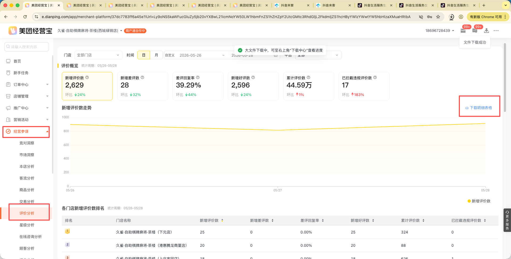
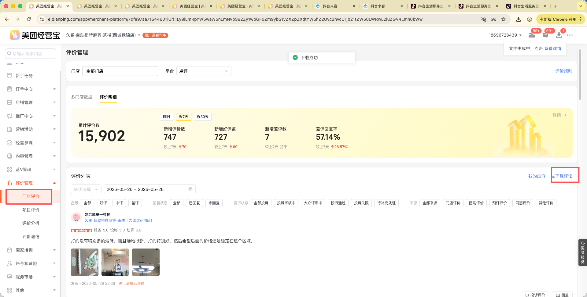
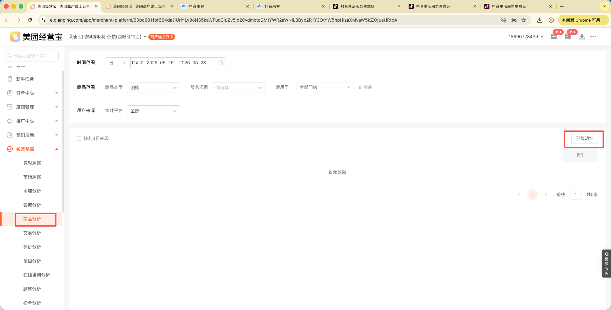
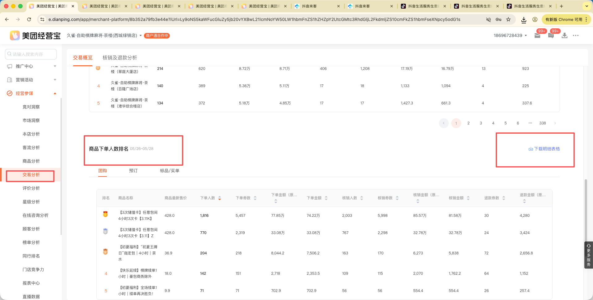
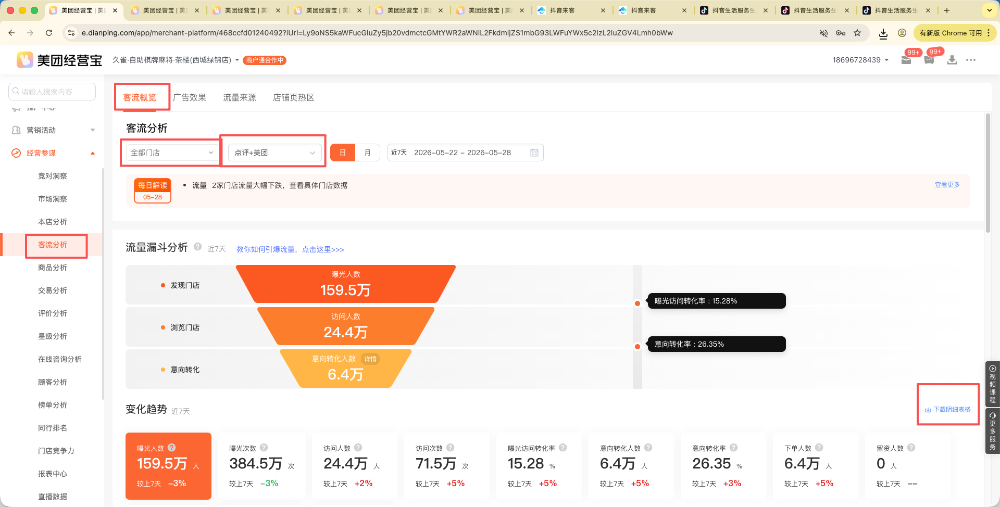
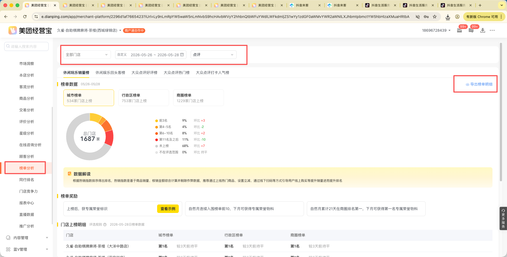
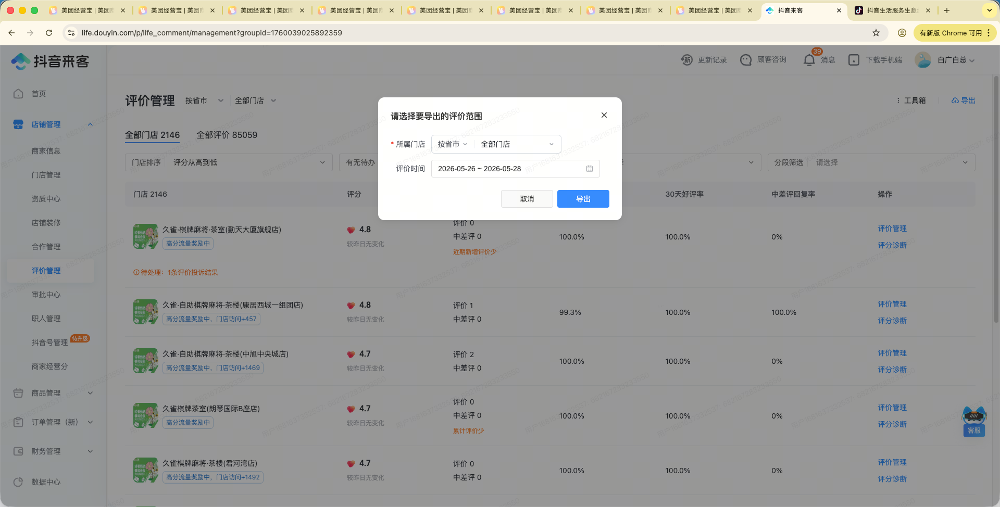
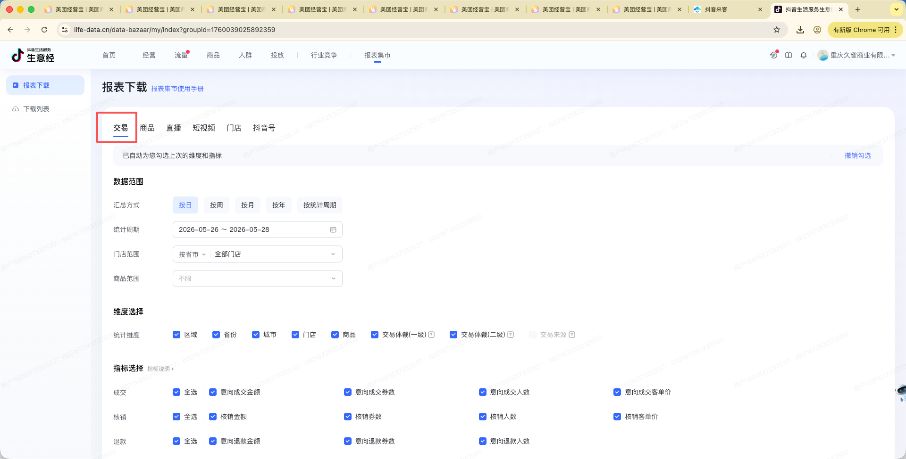
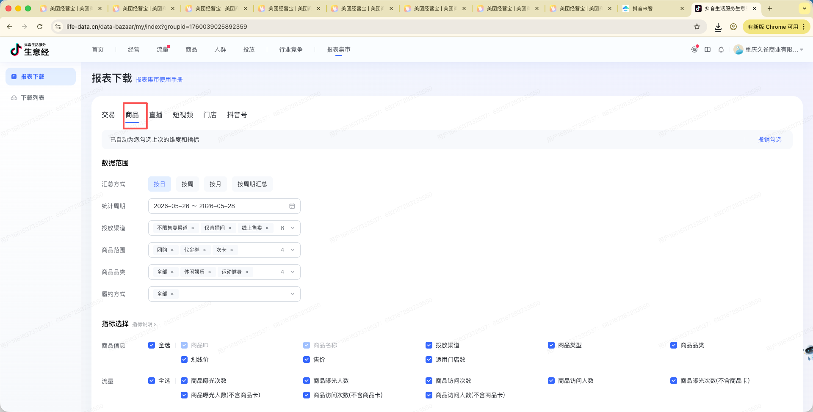
3. Demo 指标对应关系
3.1 /daily demo 字段级口径确认
下面两张图来自 https://jiuque.jingyingcanmou.cn/daily 当前 demo 页面，用于和客户确认页面字段、Excel 来源和一期/二期边界。点击图片可预览大图。
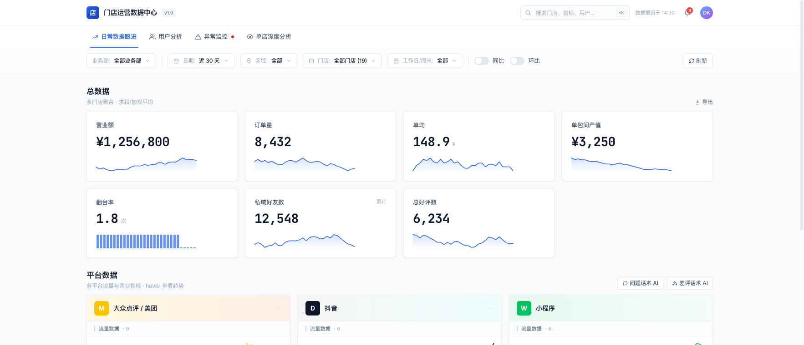
A1 A2 A3 A4 A5 A6 A7 A8 A9| 标记 | demo 模块或指标 | 当前 Excel 支撑度 | 数据源 | 计算方式 | 需要客户确认/补数 |
|---|---|---|---|---|---|
| A1 | 业务部、区域、门店筛选 | 支撑查询层 | store_business_departments、store_operation_regions、store_region_assignments | 先按 business_vertical='general_leisure_entertainment' 限定到综门店，再按业务部、区域得到门店集合。 | 业务部/区域清单、门店归属、生效日期。 |
| A2 | 日期、工作日/周末、同比、环比 | 支撑查询层 | 各 Excel 的 日期；工作日/周末由日历派生 | 日期范围过滤事实表；同比/环比在查询层计算。 | 节假日口径；环比取上一周期还是上周同期。 |
| A3 | 营业额 | 支撑 | 美团交易 核销金额；抖音交易 核销金额；小程序/POS 待补 | 默认 sum(核销金额)，GMV 另保留下单/意向成交金额。 | 展示实收/核销，还是成交 GMV。 |
| A4 | 订单量 | 支撑 | 美团交易 核销券数；抖音交易 核销券数 | 默认按核销券数；下单口径另保留下单券数/意向成交券数。 | 订单量按券数、订单数还是用户数。 |
| A5 | 单均 | 支撑 | 美团交易、抖音交易 | 营业额 / 订单量，默认按核销口径。 | 分母是否按核销券数。 |
| A6 | 单包间产值 | 不支撑 | 当前 9 个平台 Excel 不提供 | 二期需要房型/包间数量、小程序或 POS 订单。 | 分母取可售包间数、营业包间数还是实际开台数。 |
| A7 | 翻台率 | 不支撑 | 当前 9 个平台 Excel 不提供 | 二期需要包间、场次、订单时段数据。 | 按包间、房型还是门店营业时长计算。 |
| A8 | 私域好友数 | 不支撑 | 当前 9 个平台 Excel 不提供 | 二期接企微/小程序会员数据。 | 累计好友、净增好友还是可触达用户。 |
| A9 | 总好评数 | 支撑 | 美团评价汇总 新增好评数；抖音评价明细 推荐等级 >= 4星 | 按门店、日期、平台汇总；美团/点评优先用汇总。 | 抖音 4 星是否算好评；中评/差评分界。 |
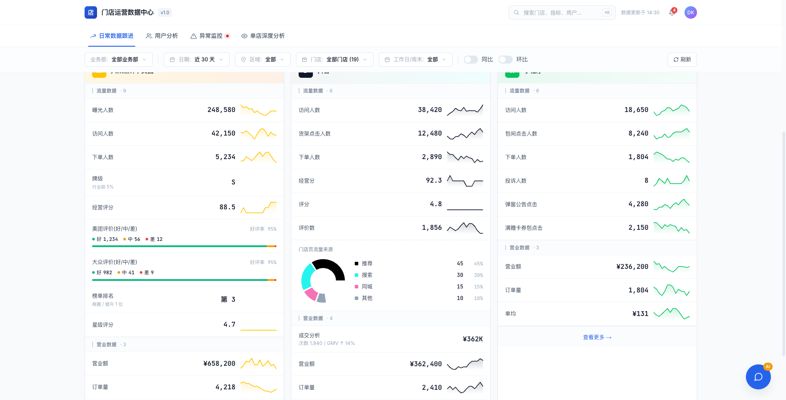
B1 B2 B3 B4 B5 B6 B7 B8 B9 B10 B11| 标记 | demo 模块或指标 | 当前 Excel 支撑度 | 数据源 | 计算方式 | 需要客户确认/补数 |
|---|---|---|---|---|---|
| B1 | 美团/点评：曝光、访问、下单 | 支撑 | 美团客流数据 | 按日期、门店、平台汇总 曝光人数、访问人数、下单人数。 | 卡片合并点评+美团，还是保留平台切换。 |
| B2 | 美团/点评：牌级、经营评分 | 不支撑 | 当前 9 个 Excel 不提供 | 暂标待接入，可人工维护或补导出入口。 | 是否必须一期上线。 |
| B3 | 美团/点评：评价好/中/差、好评率、星级评分 | 部分支撑 | 美团评价汇总、门店评价详情 | 好评/差评优先用汇总；中评用差额或明细星级；星级评分用明细均值或外部评分。 | 中评计算方式；星级评分是否接受明细均值。 |
| B4 | 美团/点评：榜单排名 | 部分支撑 | 美团榜单数据 | 默认展示商圈排名，缺失时可降级行政区/城市。 | 优先展示商圈、行政区还是城市榜。 |
| B5 | 美团/点评：营业额、订单量、单均 | 支撑 | 美团商品交易数据 | 营业额默认核销金额，订单量默认核销券数，单均派生。 | 核销金额和下单金额的展示取舍。 |
| B6 | 抖音：访问人数、下单人数 | 部分支撑 | 抖音商品报表、抖音交易报表 | 交易建议用按日交易报表；商品流量如需单店，需要重新导出带门店维度样本。 | 下单人数取意向成交人数还是核销人数。 |
| B7 | 抖音：货架点击人数 | 不支撑 | 当前样本没有明确同名字段 | 候选为商品访问人数或不含商品卡访问人数，需确认后固定。 | 货架点击在抖音后台对应哪个指标。 |
| B8 | 抖音：经营分、评分、评价数 | 部分支撑 | 评价数来自抖音评价明细；经营分无字段；评分可用推荐等级弱口径 | 推荐等级均值只能近似评分，不等于平台门店评分。 | 经营分导出入口；评分是否接受近似。 |
| B9 | 抖音：门店页流量来源 | 不支撑 | 当前交易/商品/评价样本不提供来源占比 | 需要补抖音门店流量来源导出或 API。 | 推荐/搜索/同城/其他是否必须一期上线。 |
| B10 | 抖音：成交分析、营业额、订单量、单均 | 支撑 | 抖音交易报表 | 成交分析可用意向成交；营业额默认核销金额；订单量默认核销券数。 | 成交分析展示意向成交还是核销。 |
| B11 | 小程序全部流量和营业字段 | 不支撑 | 当前 9 个平台 Excel 不提供 | 二期接小程序埋点、订单、投诉、活动点击数据。 | 小程序是否纳入一期；若纳入需补样本。 |
3.2 /users demo 字段级口径确认
/users 页面核心是用户分层和行为分布。当前 9 个平台 Excel 只有聚合交易、商品、评价数据，不包含稳定用户 ID、订单 ID、订单时间、包间、消费时长，因此多数指标不能由一期平台 Excel 严格支撑。
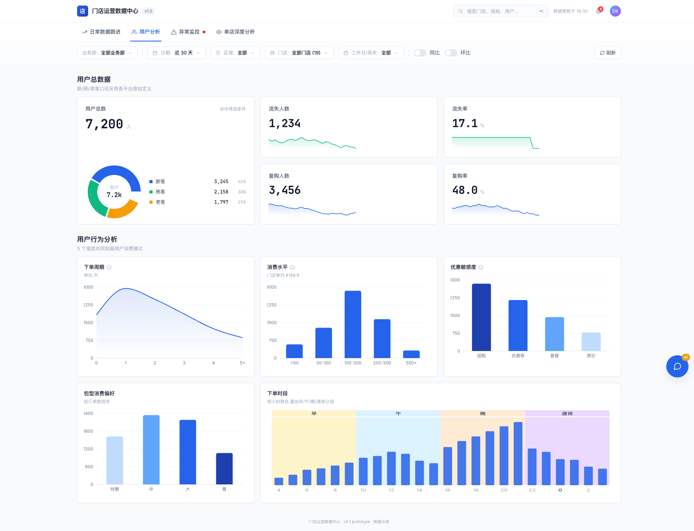
U1 U2 U3 U4 U5 U6 U7 U8| 标记 | demo 模块或指标 | 当前 Excel 支撑度 | 数据源 | 计算方式 | 需要客户确认/补数 |
|---|---|---|---|---|---|
| U1 | 用户总数、新客、熟客、老客 | 弱支撑 | 抖音商品 成交新客数；美团本批无新/熟/老客字段 | 只可按平台原始定义做弱口径；不建议用评价昵称反推用户。 | 是否接受各平台原始用户定义；需订单级匿名用户 ID。 |
| U2 | 流失人数、流失率、复购人数、复购率 | 不支撑 | 当前 9 个平台 Excel 不提供用户历史消费序列 | 不能严肃计算流失/复购。 | 需订单 ID、用户匿名 ID、最近消费日期、历史消费次数。 |
| U3 | 下单周期 | 不支撑 | 当前 9 个平台 Excel 只有日/商品/门店聚合 | 需要同一用户多次下单间隔，当前无法计算。 | 需用户级订单流水。 |
| U4 | 消费水平分布 | 部分支撑 | 美团/抖音交易和商品金额字段 | 可用门店/商品客单价做门店层粗分；不能得到用户消费水平分布。 | 需用户累计消费、单次订单金额。 |
| U5 | 优惠敏感度 | 部分支撑 | 商品类型、商品名称、售价/划线价、团购/套餐字段 | 可做商品层弱分类，不能还原用户级优惠敏感度。 | 需订单级优惠、券、原价支付记录。 |
| U6 | 包型消费偏好 | 部分支撑 | 美团/抖音商品名称 | 可从商品名称解析 特惠/中/大/尊/4H/12H 等标签。 | 需标准包型字段，避免靠商品名解析。 |
| U7 | 下单时段 | 不支撑 | 当前 9 个平台 Excel 不提供小时级下单时间 | 无法按小时、闲时/高峰或预约提前量计算。 | 需订单创建时间、预约开始时间、消费开始/结束时间。 |
| U8 | 工作日/周末、同比、环比筛选 | 支撑查询层 | 日期字段、查询层日历 | 工作日/周末由日历派生；同比/环比由查询层计算。 | 节假日是否独立分组。 |
3.3 /monitor demo 字段级口径确认
/monitor 是规则引擎页：先用经营、流量、评价、榜单、订单/房态、财务、设备、督导等指标生成风险项，再按严重/预警/关注聚合。
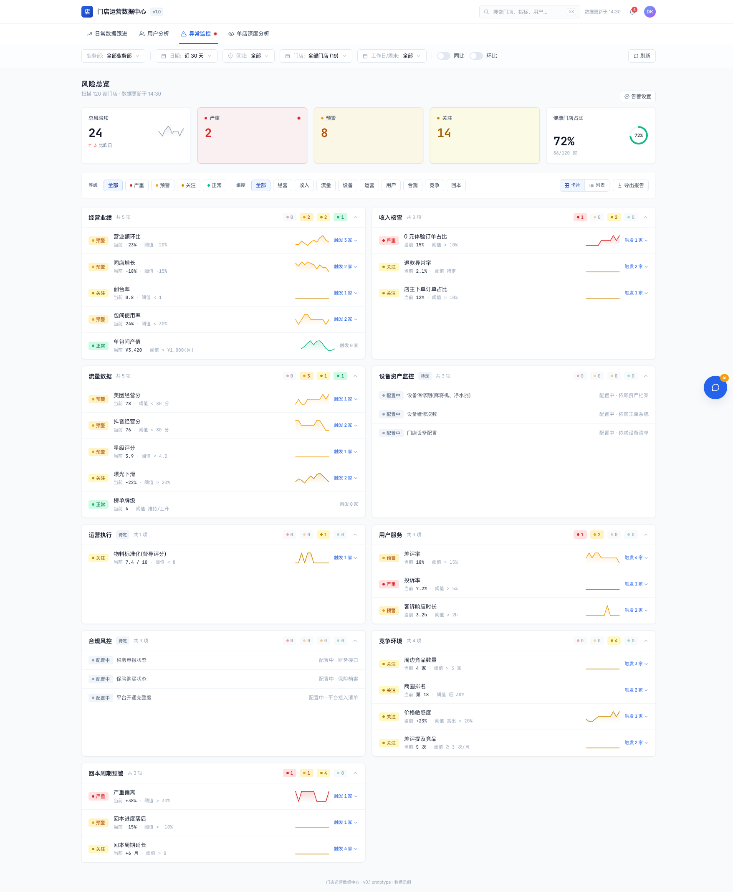
M1 M2 M3 M4 M5 M6 M7 M8 M9| 标记 | demo 模块或指标 | 当前 Excel 支撑度 | 数据源 | 计算方式 | 需要客户确认/补数 |
|---|---|---|---|---|---|
| M1 | 风险总览：总风险项、严重、预警、关注、健康门店占比 | 依赖规则结果 | 规则触发结果，不是 Excel 原始字段 | 基于下方规则触发结果聚合。 | 阈值、风险等级、健康门店定义。 |
| M2 | 经营业绩：营业额环比、同店增长 | 支撑 | 美团交易、抖音交易核销金额 | 按门店和日期范围比较核销金额。 | 同店增长比较周期和门店范围。 |
| M3 | 经营业绩：翻台率、包间使用率、单包间产值 | 不支撑 | 当前 9 个平台 Excel 不提供包间和场次 | 只能标待接入。 | 需房态、包间数、场次、营业时长。 |
| M4 | 收入核查：退款异常率 | 支撑 | 美团交易退款金额/券数；抖音意向退款金额/券数 | 按金额或券数计算退款占比并触发阈值。 | 阈值按金额、券数还是订单数。 |
| M5 | 0 元体验订单占比、店主下单订单占比 | 不支撑 | 当前 9 个平台 Excel 不提供订单实付明细和下单人身份 | 无法识别 0 元订单和店主身份。 | 需订单级支付金额、用户身份、员工/店主标识。 |
| M6 | 流量：曝光下滑、星级评分、商圈排名/榜单 | 部分支撑 | 美团客流、抖音商品、评价明细、榜单 Excel | 曝光和排名可直接算；星级用评价明细弱口径。 | 经营分、牌级当前无导出字段。 |
| M7 | 用户服务：差评率、评价未回复、客诉响应 | 部分支撑 | 评价汇总、评价明细 | 差评率和评价回复状态可算；投诉率和客诉时长需投诉系统。 | 投诉和评价是否合并为用户服务风险。 |
| M8 | 竞争环境：周边竞品、价格敏感度、竞品差评提及 | 部分支撑 | 榜单 Excel、评价文本、商品价格字段 | 商圈排名可用榜单；差评提及竞品可用评价文本 NLP；价格敏感度需竞品价。 | 竞品清单和竞品价格来源。 |
| M9 | 设备、运营执行、合规、回本周期 | 不支撑 | 当前 9 个平台 Excel 不提供 | 只预留规则分类，不纳入一期 Excel 看板。 | 需设备档案/工单、督导评分、财务/保险/税务、投资回本数据。 |
3.4 /stores/上海徐汇店 demo 字段级口径确认
单店页展示单店订单行为、包型、消费能力、留存、画像标签。当前平台 Excel 能支撑平台交易、商品/套餐、评价、榜单这些单店弱口径；涉及用户、包间、预约、换房、消费时长、留存标签的图，需要二期订单/房态/会员数据。
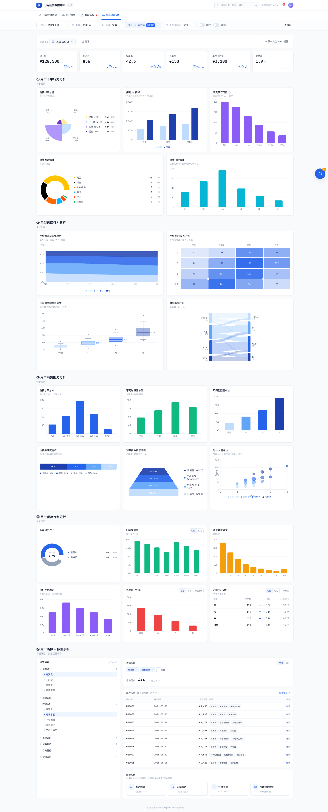
S1 S2 S3 S4 S5 S6 S7 S8 S9 S10 S11 S12| 标记 | demo 模块或指标 | 当前 Excel 支撑度 | 数据源 | 计算方式 | 需要客户确认/补数 |
|---|---|---|---|---|---|
| S1 | 单店筛选与顶部卡片：营业额、客单价 | 支撑 | 美团/抖音交易核销金额、核销券数 | 营业额默认核销金额；客单价 核销金额 / 核销券数。 | 单店页是否只看选中门店，是否合并平台。 |
| S2 | 场次数、续单率、单包间产值、翻台率 | 不支撑 | 当前 9 个平台 Excel 不提供场次、续单、包间 | 无法计算，只能标待接入。 | 需 POS/小程序订单、房态、包间数、续单标识。 |
| S3 | 消费时段、闲时/高峰、预订习惯、消费时长 | 不支撑 | 当前 9 个平台 Excel 不提供小时、预约提前量、消费开始/结束时间 | 无法计算时段和时长。 | 需订单创建时间、预约时间、开台/离店时间。 |
| S4 | 消费渠道偏好 | 部分支撑 | 美团/点评/抖音交易金额和券数 | 按平台交易金额/券数占比计算；高德/快手/小程序当前无样本。 | 是否合并点评与美团；是否补高德/快手/小程序。 |
| S5 | 包型偏好、包型趋势、包型 x 时段热力图 | 部分支撑 | 美团/抖音商品名称、交易日期 | 包型可从商品名称解析；趋势按日期聚合；时段热力图不能做。 | 需标准包型、订单时段、房型字段。 |
| S6 | 不同包型客单价、换房行为 | 部分/不支撑 | 商品交易弱口径；当前无换房事件 | 包型客单价可用商品交易弱算；换房行为不支撑。 | 需订单包间、换房事件、前后包型。 |
| S7 | 消费水平、时段客单价、时长 x 客单价 | 部分/不支撑 | 商品/交易金额；当前无时段和消费时长 | 消费水平可用订单/商品金额弱分布；时段和时长相关不支撑。 | 需订单级金额、时间、消费时长。 |
| S8 | 价格敏感度、消费能力客群分层 | 部分/不支撑 | 商品名称、商品类型、售价/划线价；当前无用户累计消费 | 可用团购/套餐/原价商品弱分类；客群分层需用户累计消费。 | 需优惠明细、用户 ID、累计消费。 |
| S9 | 新老用户、复购率、消费频次、生命周期 | 不支撑 | 当前 9 个平台 Excel 不提供用户历史序列 | 无法计算。 | 需用户匿名 ID、订单历史。 |
| S10 | 流失用户、沉默用户分析 | 不支撑 | 当前 9 个平台 Excel 不提供用户最近一次消费 | 无法识别沉默或流失。 | 需用户最近消费日期和召回规则。 |
| S11 | 用户画像标签、筛选命中、用户列表 | 不支撑 | 当前 9 个平台 Excel 不提供会员/标签/触达授权 | 只能作为二期标签系统设计，不应一期伪造。 | 需会员/订单/渠道/触达授权。 |
| S12 | 运营动作：推送、企微、导出名单、创建营销活动 | 不支撑 | 营销系统能力，不是平台 Excel 字段 | 一期不纳入平台 Excel 看板。 | 需触达系统、权限、合规规则。 |
4. 入库模型设计
修正原则：平台和业态拆开建模。platform 继续表示数据来源，保持 meituan、dianping、douyin；久雀这个到综子业态通过 business_vertical='general_leisure_entertainment' 表示，不新增综合平台，也不为久雀单独复制一套数据库。
UNIQUE(store_id, date, platform)，短期保持不变。真正的隔离边界来自 stores.business_vertical 和 platform_connections.business_vertical，不是靠复制平台码。
4.1 新增业态字段
ALTER TABLE stores
ADD COLUMN IF NOT EXISTS business_vertical VARCHAR(32) NOT NULL DEFAULT 'dining'
CHECK (business_vertical IN ('dining', 'general_leisure_entertainment'));
ALTER TABLE platform_connections
ADD COLUMN IF NOT EXISTS business_vertical VARCHAR(32) NOT NULL DEFAULT 'dining'
CHECK (business_vertical IN ('dining', 'general_leisure_entertainment'));
ALTER TABLE platform_authorizations
ADD COLUMN IF NOT EXISTS business_vertical VARCHAR(32) NOT NULL DEFAULT 'dining'
CHECK (business_vertical IN ('dining', 'general_leisure_entertainment'));
CREATE INDEX IF NOT EXISTS idx_stores_business_vertical
ON stores(business_vertical);
CREATE INDEX IF NOT EXISTS idx_platform_connections_platform_vertical
ON platform_connections(platform, business_vertical, connection_status);
CREATE INDEX IF NOT EXISTS idx_platform_authorizations_platform_vertical
ON platform_authorizations(platform, business_vertical, authorization_status);dining 表示到餐，general_leisure_entertainment 表示久雀这类到综休闲娱乐。后续丽人、亲子等到综子业态按 general_* 继续追加。
stores.business_vertical 是门店业务归属的最终判断；platform_connections.business_vertical 和 platform_authorizations.business_vertical 用于授权、采集、scheduler 取任务和 parser 路由。创建连接时应从门店继承，品牌级连接则由用户选择。
4.2 artifact 命名
platform_connections.platform、platform_authorizations.platform 使用英文平台 key；部分既有事实表历史上可能保存中文平台值，例如 product_detail.platform='美团'/'点评'。到综开发时不要新增 meituan_general 这类平台码；如果复用历史表，parser 和查询层需要做 normalize_platform_key 兼容。
格式和到餐一致时继续用现有 artifact type，并在 metadata 记录 business_vertical='general_leisure_entertainment'；格式不同则使用带业态的 artifact type。本文 9 个样本一期先按格式不同处理，避免误走现有到餐 parser：
meituan_general_review_stats_daily
meituan_general_review_comments
meituan_general_product_traffic
meituan_general_product_transaction
meituan_general_store_traffic
meituan_general_ranking
douyin_general_review
douyin_general_transaction
douyin_general_product4.3 复用表与字段落点
| 样本 | 复用目标 | platform key / 事实表取值 | 业态 | 说明 |
|---|---|---|---|---|
| 美团评价汇总 | store_reviews | key 为 meituan / dianping；历史事实表兼容 美团 / 点评 | general_leisure_entertainment | 评价数、好评数、差评数、回复率 |
| 美团评价明细 | store_comments | key 为 meituan / dianping；历史事实表兼容 美团 / 点评 | general_leisure_entertainment | 无稳定评价 ID 时用内容 hash 生成 platform_comment_id |
| 美团商品访问 | product_detail | key 为 meituan / dianping；历史事实表兼容 美团 / 点评 | general_leisure_entertainment | 商品 ID、售价、访问、下单、访购率 |
| 美团商品交易 | product_detail | key 为 meituan / dianping；历史事实表兼容 美团 / 点评 | general_leisure_entertainment | 下单、核销、退款按商品粒度保留 |
| 美团客流 | store_traffic | key 为 meituan / dianping；历史事实表兼容 美团 / 点评 | general_leisure_entertainment | 曝光、访问、意向、下单、收藏、打卡 |
| 美团榜单 | store_rankings | key 为 meituan / dianping；历史事实表兼容 美团 / 点评 | general_leisure_entertainment | 多榜单明细不足字段先保留 raw_data |
| 抖音评价 | douyin_review | douyin | general_leisure_entertainment | 保留 AI/RPA 回复扩展空间 |
| 抖音交易 | douyin_transactions_detail | douyin | general_leisure_entertainment | RPA 选择“按日”导出；若文件出现 周 字段则重新导出 |
| 抖音商品 | douyin_product_detail | douyin | general_leisure_entertainment | 缺门店维度时只做品牌/商品层指标 |
4.4 表结构处理原则
in_store_general_store_daily、in_store_general_product_daily 等业态专表。4.5 门店运营组织维度
/daily 顶部有业务部、区域、门店三级筛选。这个维度是久雀内部运营组织口径，不属于平台，也不属于业态；建议单独建维表，不要把区域写进交易、客流、评价事实表唯一键。
CREATE TABLE IF NOT EXISTS store_business_departments (
id UUID PRIMARY KEY DEFAULT uuid_generate_v4(),
organization_id UUID REFERENCES organizations(id) ON DELETE SET NULL,
customer_code VARCHAR(64) NOT NULL DEFAULT 'jiuque',
business_vertical VARCHAR(32) NOT NULL DEFAULT 'general_leisure_entertainment'
CHECK (business_vertical IN ('dining', 'general_leisure_entertainment')),
department_name VARCHAR(100) NOT NULL,
department_code VARCHAR(64),
sort_order INTEGER NOT NULL DEFAULT 0,
status VARCHAR(20) NOT NULL DEFAULT 'active'
CHECK (status IN ('active', 'disabled')),
UNIQUE(customer_code, business_vertical, department_name)
);
CREATE TABLE IF NOT EXISTS store_operation_regions (
id UUID PRIMARY KEY DEFAULT uuid_generate_v4(),
department_id UUID NOT NULL REFERENCES store_business_departments(id) ON DELETE CASCADE,
parent_region_id UUID REFERENCES store_operation_regions(id) ON DELETE SET NULL,
region_name VARCHAR(100) NOT NULL,
region_code VARCHAR(64),
sort_order INTEGER NOT NULL DEFAULT 0,
status VARCHAR(20) NOT NULL DEFAULT 'active'
CHECK (status IN ('active', 'disabled')),
UNIQUE(department_id, region_name)
);
CREATE TABLE IF NOT EXISTS store_region_assignments (
id UUID PRIMARY KEY DEFAULT uuid_generate_v4(),
store_id UUID NOT NULL REFERENCES stores(id) ON DELETE CASCADE,
region_id UUID NOT NULL REFERENCES store_operation_regions(id) ON DELETE CASCADE,
valid_from DATE NOT NULL DEFAULT CURRENT_DATE,
valid_to DATE,
is_primary BOOLEAN NOT NULL DEFAULT true,
CHECK (valid_to IS NULL OR valid_to >= valid_from),
UNIQUE(store_id, region_id, valid_from)
);business_vertical='general_leisure_entertainment' 限定到综门店，再按业务部和区域算出 store_id 集合，最后传给日常数据、用户分析、异常监控、单店深度分析查询。5. Parser 与字段映射
5.1 artifact 路由
Parser 路由按 platform + business_vertical + artifact_type 判断。平台只表示来源，业态决定走到餐逻辑还是到综逻辑。
const vertical = connection.business_vertical ?? 'dining'
if (vertical === 'general_leisure_entertainment') {
switch (artifactType) {
case 'meituan_general_review_stats_daily':
case 'meituan_general_review_comments':
case 'meituan_general_product_traffic':
case 'meituan_general_product_transaction':
case 'meituan_general_store_traffic':
case 'meituan_general_ranking':
case 'douyin_general_review':
case 'douyin_general_transaction':
case 'douyin_general_product':
return parseGeneralInStoreArtifact(...)
}
}metadata.business_vertical='general_leisure_entertainment'，且 parser 分支必须读取 connection vertical，不能只靠 artifact type 判断。
COLUMN_DRIFT，不能静默按错列导入。5.2 周期解析
美团日期：YYYY-MM-DD -> period_type=day, period_start=period_end=日期
抖音日期：YYYY-MM-DD -> period_type=day, period_start=period_end=日期周 或值形如 YYYY-MM-DD~YYYY-MM-DD，不要伪造成日数据，应返回导出配置错误并提示重新导出。5.3 关键指标映射
| metric_key | 美团字段 | 抖音字段 | 聚合 |
|---|---|---|---|
exposure_users | 客流：曝光人数 | 商品：商品曝光人数 | sum |
visit_users | 客流：访问人数 / 商品：商品访问人数 | 商品：商品访问人数 | sum |
intent_users | 客流：意向转化人数 | 交易：意向成交人数 | sum |
order_amount | 交易：下单金额 | 交易：意向成交金额 | sum |
redeemed_amount | 交易：核销金额 | 交易：核销金额 | sum |
refund_amount | 交易：退款金额（原价） | 交易：意向退款金额 | sum |
positive_review_count | 评价汇总：新增好评数 | 推荐等级 >= 4星 | sum |
ranking_city_rank | 榜单：城市排名 | 无 | latest |
6. Demo 查询设计
6.1 总数据
WITH scoped_stores AS (
SELECT DISTINCT s.id AS store_id
FROM stores s
LEFT JOIN store_region_assignments sra
ON sra.store_id = s.id
AND sra.valid_from <= $2::date
AND (sra.valid_to IS NULL OR sra.valid_to >= $1::date)
LEFT JOIN store_operation_regions r ON r.id = sra.region_id
LEFT JOIN store_business_departments d ON d.id = r.department_id
WHERE s.business_vertical = 'general_leisure_entertainment'
AND ($3::uuid[] IS NULL OR s.id = ANY($3::uuid[]))
AND ($4::uuid IS NULL OR d.id = $4::uuid)
AND ($5::uuid IS NULL OR r.id = $5::uuid)
),
connected_stores AS (
SELECT DISTINCT pcs.store_id, pc.platform
FROM platform_connection_stores pcs
JOIN platform_connections pc ON pc.id = pcs.connection_id
JOIN scoped_stores ss ON ss.store_id = pcs.store_id
WHERE pc.business_vertical = 'general_leisure_entertainment'
AND pc.platform = ANY(ARRAY['meituan', 'dianping', 'douyin'])
),
meituan_dianping_tx AS (
SELECT SUM(product_verified_amount) AS revenue, SUM(product_vouchers_verified) AS orders, SUM(product_revenue_after) AS gmv
FROM product_detail pd
JOIN stores s ON s.id = pd.store_id
WHERE EXISTS (
SELECT 1
FROM connected_stores cs
WHERE cs.store_id = pd.store_id
AND cs.platform = CASE pd.platform
WHEN '美团' THEN 'meituan'
WHEN '点评' THEN 'dianping'
ELSE pd.platform
END
)
AND pd.platform IN ('meituan', 'dianping', '美团', '点评')
AND pd.date BETWEEN $1 AND $2
),
douyin_tx AS (
SELECT SUM(redeemed_amount) AS revenue, SUM(redeemed_voucher_count) AS orders, SUM(intent_revenue) AS gmv
FROM douyin_transactions_detail dt
JOIN stores s ON s.id = dt.store_id
WHERE EXISTS (
SELECT 1
FROM connected_stores cs
WHERE cs.store_id = dt.store_id
AND cs.platform = 'douyin'
)
AND dt.date BETWEEN $1 AND $2
)
SELECT
COALESCE(meituan_dianping_tx.revenue, 0) + COALESCE(douyin_tx.revenue, 0) AS revenue,
COALESCE(meituan_dianping_tx.orders, 0) + COALESCE(douyin_tx.orders, 0) AS orders,
COALESCE(meituan_dianping_tx.gmv, 0) + COALESCE(douyin_tx.gmv, 0) AS gmv
FROM meituan_dianping_tx, douyin_tx;6.2 单店深度分析一期边界
一期可展示
- 渠道偏好：美团/点评/抖音核销金额占比。
- 商品偏好：从商品名称解析特惠、中包、大包、尊享、12H、4H。
- 评价画像：评价关键词、差评内容、回复情况。
- 榜单表现：城市/行政区/商圈排名。
二期待接入
- 包间使用率、翻台率。
- 下单时段。
- 用户列表与标签。
- 消费生命周期和流失用户。
7. Worker 隔离设计
不需要另写一套 scheduler 代码；可以在现有 scheduler 中按业态分轮取任务，也可以部署一个 general_leisure_entertainment mode 实例。无论采用哪种运行方式，取任务入口都必须显式声明业态，例如 WORKER_BUSINESS_VERTICAL=dining|general_leisure_entertainment，并在 SELECT 里过滤 business_vertical。同一个 platform='meituan'，dining 和 general_leisure_entertainment 可以走不同下载逻辑。
| worker / 资源 | dining 连接 | general_leisure_entertainment 连接 | 到餐 artifact | 到综 artifact | 到餐数据 | 到综数据 |
|---|---|---|---|---|---|---|
| 现有到餐 worker | 允许 | 禁止 | 允许 | 禁止 | 允许 | 禁止 |
| 久雀到综 worker | 禁止 | 允许 | 禁止 | 允许 | 禁止 | 允许 |
SELECT *
FROM platform_connections
WHERE connection_status = 'connected'
AND platform IN ('meituan', 'dianping', 'douyin')
AND business_vertical = $1 -- workerBusinessVertical
FOR UPDATE SKIP LOCKED;switch (`${connection.platform}:${connection.business_vertical}`) {
case 'meituan:dining':
case 'dianping:dining':
return new MeituanConnector(...)
case 'douyin:dining':
return new DouyinConnector(...)
case 'meituan:general_leisure_entertainment':
case 'dianping:general_leisure_entertainment':
return new MeituanGeneralConnector(...)
case 'douyin:general_leisure_entertainment':
return new DouyinGeneralConnector(...)
}business_vertical，避免脏数据或错误队列污染隔离边界。8. 开发任务拆分
9. 仍需补充
| 材料 | 用途 | 是否阻塞一期 |
|---|---|---|
| 截图更新 | 当前 HTML 已嵌入 Image #1 到 Image #9，以及 /daily、/users、/monitor、/stores/上海徐汇店 demo 截图；后续如后台 UI 变化，覆盖 assets 同名图片即可 | 否 |
| 抖音评价导出动作复测 | Image #7 已补评价导出弹窗；开发时仍需确认导出按钮点击后的下载任务和文件命名规则 | 部分阻塞 RPA |
| 抖音按日导出样本复测 | 交易、商品都选择“按日”后重新导出一份样本，作为 parser 的固定样本 | 建议补充 |
| 小程序/POS/订单样本 | 包间、翻台、用户画像、流失/复购 | 不阻塞一期，阻塞二期 |